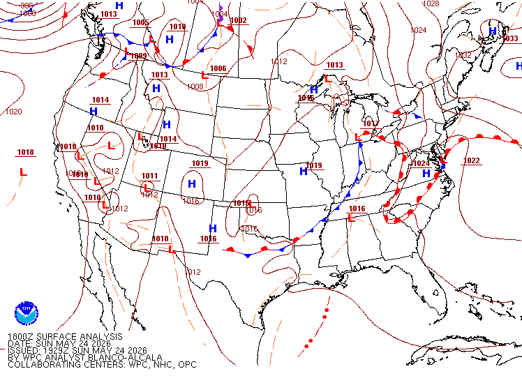
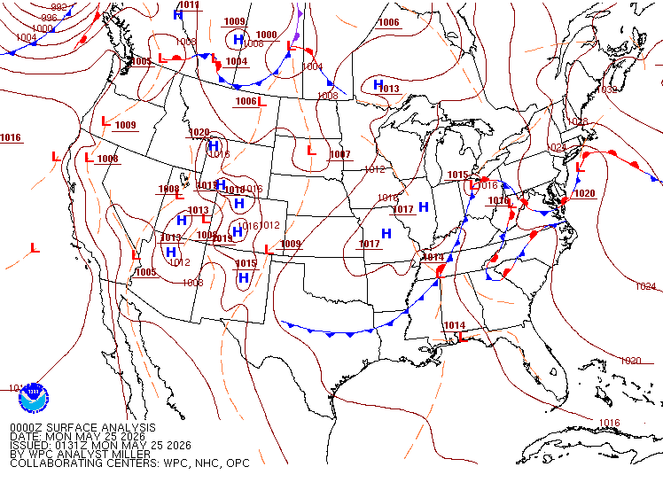
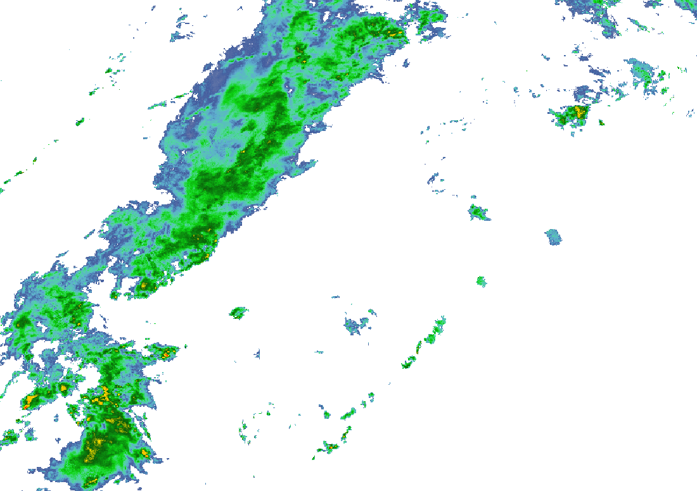
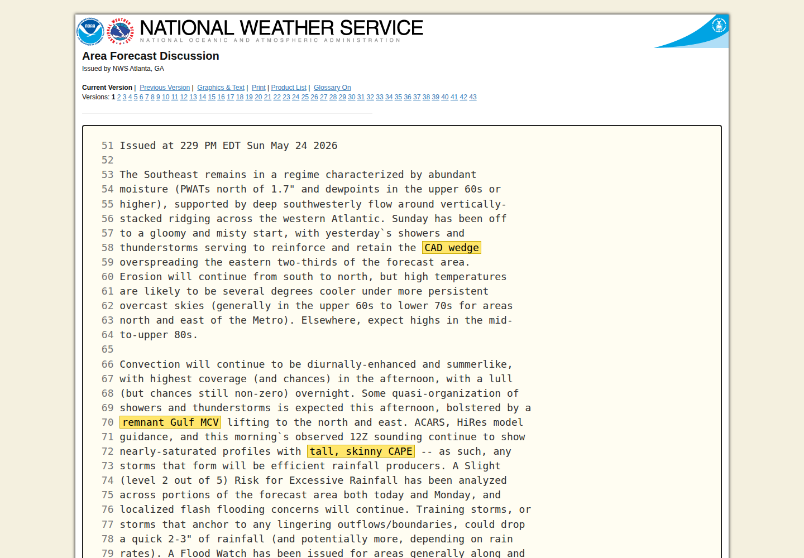
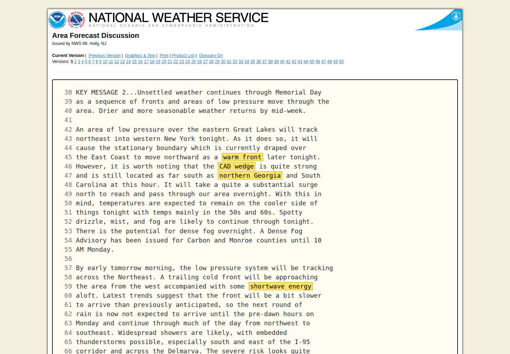
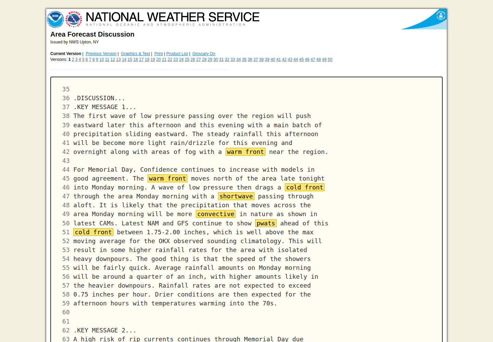
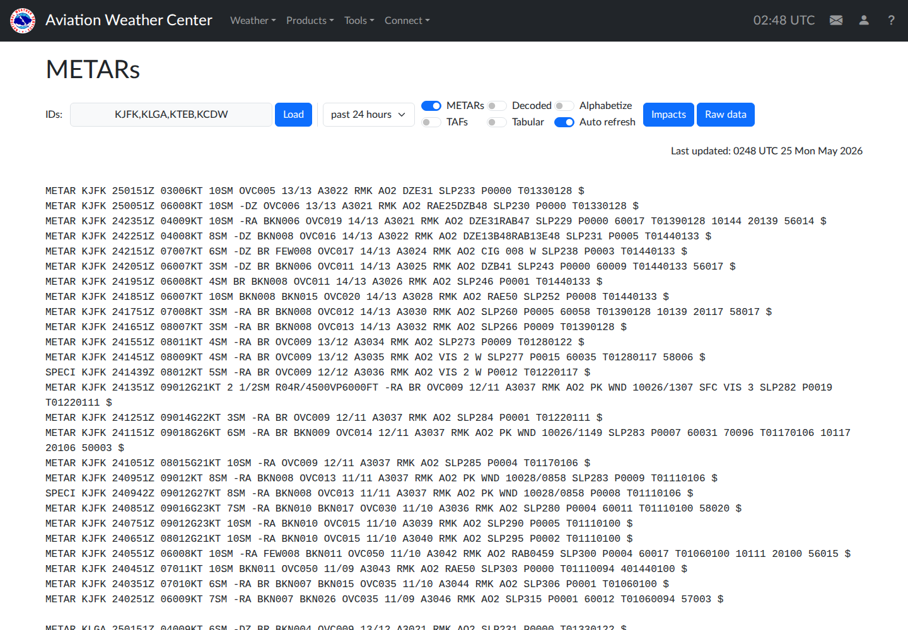
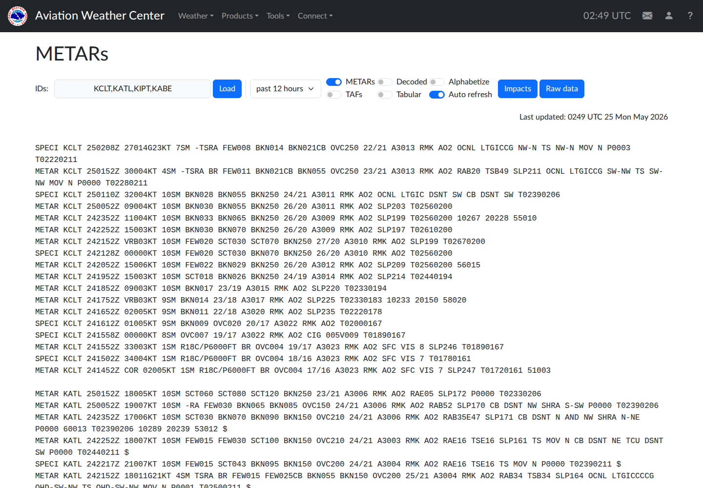

Cold air damming was the floor. The MCV was the agitator.
The two-day story: wedge first, MCV second, coastal erosion last.
Forecast discussions from Atlanta, Philadelphia, and New York all point to the same sequence.
The low-level flow backed onshore/northeasterly along the coastal plain. That made a shallow stable layer, fog, drizzle, and low ceilings.
Atlanta forecasters described prior showers/storms reinforcing the CAD wedge across much of Georgia.
The MCV added mesoscale ascent and organization where the air mass was already moist and conditionally unstable.
OKX expected morning convective showers, but the coastal surface layer remained stable and marine-influenced.
The surface map had the classic CAD fingerprint.
Look for the frontal clutter along the East Coast, high pressure to the north/east side, and a low/wave trying to lift the boundary north.


Cross-section: the cold dome is shallow, but it changes everything.
The surface parcel in NYC is trapped under an inversion. The active parcels are either lifted above the wedge, or rooted where the wedge has eroded inland/southwest.
The 00Z soundings separate the two air masses.
OKX had a cool surface layer with a low-level inversion and no surface-based CAPE. FFC/RNK were warmer, moister, and much closer to convective.
Temperature profiles, 00Z 25 May
Interpretation
- NYC: stable marine/CAD layer at the ground. Showers can be forced/elevated, but robust surface-based storms are disfavored.
- Georgia/Appalachians: warmer/moister profiles, an MCV, and lower inhibition. That is where convective organization makes sense.
- The trap: high PWAT can make weak convection look impactful on radar and in the cockpit, even when severe potential is low.
The wedge showed up as hours of low ceilings, not just a model idea.
Recent METARs captured the shallow cold dome: cool temperatures, easterly/northeasterly surface winds, drizzle/fog, and IFR ceilings across NYC/northern NJ/eastern PA.
Low-ceiling persistence in the 48-hour METAR pull
Count of reports with ceiling at or below 1,000 ft from AviationWeather 48-hour METAR API. Counts are not normalized by station reporting frequency.
Near 02Z 25 May: the coastal side was still wedged
- KJFK: 13/13 deg C, OVC005, northeasterly wind, drizzle earlier.
- KLGA: 13/12 deg C, BKN004/OVC009, drizzle and mist.
- KTEB: 13/12 deg C, 2 SM light rain/mist, OVC005.
- KCDW: 13/13 deg C, OVC006, east-southeast wind.
- KCLT: 22/21 deg C with TSRA and CB - much closer to the active convective air mass.
At 02:28Z, the convection was mostly inland and west.
That matches your radar read: the forcing/instability overlap was not centered on NYC yet. NYC was downstream under the stable marine side.

Where did the lift come from?
Not one magic trigger. It was stacked, with each layer helping a different part of the storm shield.
1. Isentropic upglide
Warm/moist southwesterly flow was forced up and over the shallow CAD dome. This supports broad rain and embedded elevated convection.
2. MCV ascent
The remnant Gulf vortex supplied mid-level spin and mesoscale lift. It helped organize convection across GA/Carolinas/Appalachians.
3. Front/shortwave forcing
By Monday morning, a low, warm front, trailing cold front, and shortwave were all moving into the Mid-Atlantic/Northeast.
The important distinction
Lift exists over NYC, but instability does not line up as well at the surface. West of the Appalachians and near the Piedmont, lift and usable instability overlap better, so the convection is more obvious there first.
So why can NYC get thunder at all?
Because thunder does not require the surface parcel to be the storm parcel.
What blocks surface storms
- Cold, saturated surface layer.
- Low-level inversion/warm nose above the surface.
- Marine easterly flow keeps the boundary layer cool.
- Surface-based CAPE at OKX: effectively zero at 00Z.
What can still produce thunder
- Lifted parcels above the cold dome, roughly 925-800 mb.
- Convective rain bands advecting in from inland.
- Shortwave/frontal ascent deepening the saturated layer.
- Very high moisture makes even weak cells efficient.
Pilot-weather lessons from this case.
Do not read radar alone
Radar showed where the convection was, but the sounding explained why it was not rooted near NYC.
CAD creates false simplicity
The surface looks uniformly miserable: fog, drizzle, IFR. Aloft, the air mass can be doing something completely different.
The warm front is the hinge
A 50-100 mile warm-front error can flip the forecast from cold stratiform rain to embedded convective downpours.
Sources used
- NWS Atlanta/FFC AFDs, issued 24-25 May 2026: CAD wedge, MCV, HiRes/CAM guidance, tall-skinny CAPE discussion.
- NWS New York/OKX AFD, issued 24 May 2026 2357Z: warm front, cold front, shortwave, convective morning showers, PWAT 1.75-2.00 inches.
- NWS Philadelphia/PHI AFD, issued 25 May 2026 0147Z: strong CAD wedge, warm-frontal progression, shortwave/cold-front timing.
- University of Wyoming sounding archive: OKX, FFC, IAD, RNK 00Z 25 May 2026 soundings.
- AviationWeather METAR API: KJFK, KLGA, KTEB, KCDW, KABE, KIPT, KATL, KCLT 48-hour observations.
- WPC surface analysis archive and NCEP CONUS radar WMS, 24-25 May 2026.
AFD source captures: CAD wedge plus MCV.
These are browser screenshots from the NWS product pages, trimmed to the relevant paragraphs and highlighted for the terms that matter.


AFD source capture: NYC gets forced rain, not surface-rooted storms.
OKX framed Monday morning as a warm-front/cold-front/shortwave event with very high precipitable water.

How to read this with the sounding
- The AFD explains forcing and moisture.
- The OKX sounding explains why the surface layer was still hostile.
- Together: elevated/forced showers make sense, while robust surface-based NYC convection does not.
AviationWeather screenshots: the surface reports tell the story.
The raw METAR pages show the contrast: NYC stuck in cool IFR/drizzle while Charlotte/Atlanta had warmer, more convective observations nearby.

